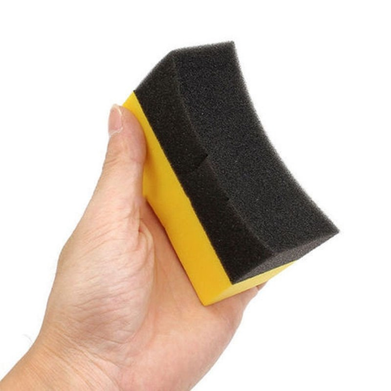

Lemosható festék?
Minden lakásfelújító életében eljön az a pillanat, amikor a frissen mázolt, makulátlan falon megjelenik az első kávéfolt, egy sáros kutyanyom vagy a gyerekek legújabb zsírkréta-alkotása. Régebben ilyenkor csak a bosszankodás vagy a teljes újrafestés maradt, de a modern technológia elhozta a megoldást a lemosható és súrolható falfestékek képében. Ezek a speciális bevonatok olyan kötőanyagokat tartalmaznak, amelyek száradás után egy rendkívül ellenálló, zárt védőréteget képeznek a felületen. Ez a láthatatlan „pajzs” megakadályozza, hogy a szennyeződések mélyen beszívódjanak a fal pórusaiba, így a legtöbb folt egy egyszerű nedves szivaccsal eltávolítható.
A lemosható festék mellett számos érv szól: a prémium kategóriás termékek több száz súrolási ciklust is kibírnak anélkül, hogy a színük megkopna, így hosszú távon jelentős összeget spórolhatunk meg a tisztasági festések ritkulásával. Különösen ajánlott a használatuk konyhákban, előszobákban és gyerekszobákban, ahol a higiénia és a tartósság elsődleges szempont. Fontos azonban a helyes tisztítás: ha megtörtént a baj, ne essünk neki durva vegyszerekkel vagy dörzsi szivaccsal, mert az felsértheti a festék finom szerkezetét; egy kevés semleges mosogatószer és egy puha rongy általában csodákra képes. Vásárláskor érdemes a dobozon a „nedves dörzsállósági osztályt” keresni, ahol az I. és II. kategória jelzi a valódi strapabírást. Ha bizonytalan vagy a választásban, látogass el hozzánk a boltba, ahol szakértőink segítenek megtalálni a projektedhez illő legellenállóbb bevonatot és a hozzá passzoló színvilágot!